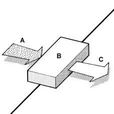

GENERAL
- Path
- Descriptions > 50 auxiliary units > GENERAL
- Kind
- system description
- Applies to
- all engines; all production periods
- Interactive page
- https://sloeber94.github.io/elrnDB-lThss/en/#/162337
Applies to: all engines; all production periods
The climate control system makes it possible to control and alter the characteristics (temperature and humidity) of the air introduced into the passenger compartment, demist the glass surfaces and protect the occupants of the vehicle from pollutant substances.
The passenger compartment climate control system therefore contributes greatly to the physical wellbeing of the passengers and their comfort.

- A. Ambient air (impure, humid, hot/cold)
- B. Climate control
- C. Climatized air (purified, dehumidified, heated/cooled, ventilated)